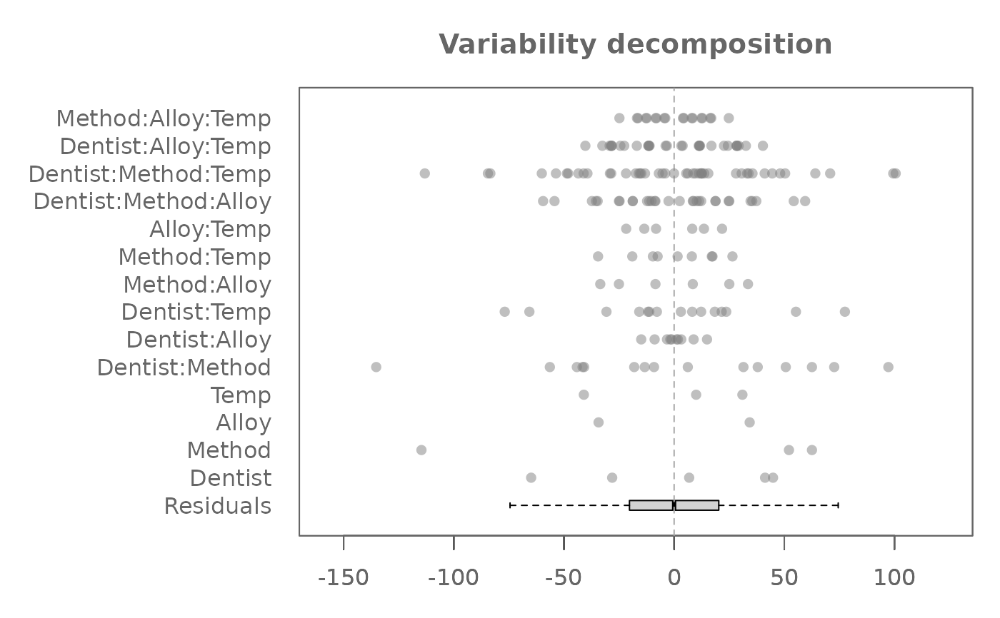

This dataset contains measurements of the Diamond Pyramid
Hardness Number (DPHN) of simulated dental fillings. The response variable
represents the sum of 10 individual DPHN readings for each sample.
Data are pulled from table 6-8 of the referenced source.
The data were collected from a study involving five different
dentists. The dental fillings were made from two types of gold alloy
(A1 and AuCa), sintered at three different temperatures
(1500F, 1600F, 1700F), and prepared using
three condensation methods (1, 2, 3).
Format
A data.frame with 90 rows and the following columns:
- Dentist
A factor with 5 levels, each identifying a denstist.
- Method
A factor denoting the condensation method used.
- Alloy
A character indicating the type of gold alloy used.
- Temp
A character representing the sintering temperature.
- Hard
An integer vector representing the summed Diamond Pyramid Hardness Number (DPHN) for each combination of factors. This is the response variable.
Source
Hoaglin, D. C., Mosteller, F., & Tukey, J. W. (1991). Fundamentals of Exploratory Analysis of Variance. Wiley.
Examples
M0 <- eda_mean_sweep(feav6_8, Hard, Dentist, Method, Alloy, Temp, max_order = 3)
plot(M0, rotate = TRUE, order = FALSE)
